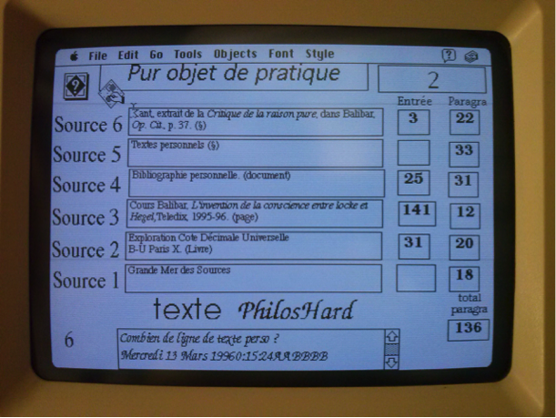
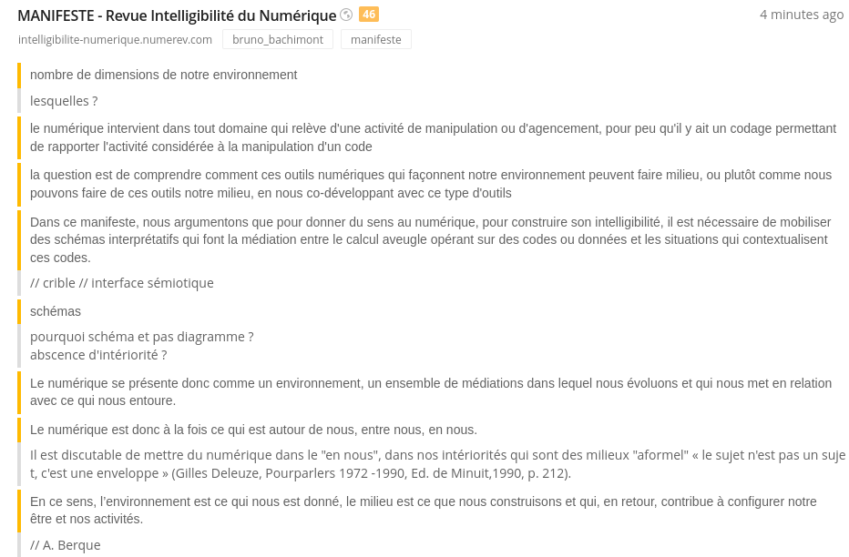
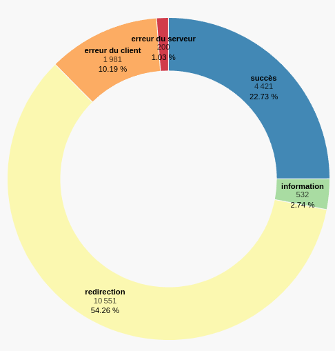

2 Positionnements
Où suis-je ? Quels sont les textes fondateurs, les cadres épistémologiques, les influences et leurs ramifications qui constituent aujourd’hui mon milieu de connaissances et dans lesquels évoluent ma pensée ?
Pour répondre à ces questions nous explorerons les connaissances qui m’ont influencées et le paysage scientifique qu’elles m’ont amené à découvrir. Ce chapitre présente mon point de vue sur ce paysage, c’est à-dire d’où je le regarde et avec quel niveau de précisions, il donne une représentation de ce que je discerne dans la noosphère (Morin, 1981) (Chardin & Tardivel, 1997) et comment j’y agis. Ce milieu de connaissances est composé par les documents que j’ai consultés au fil des années mais aussi par les personnes avec lesquelles les échanges intellectuels m’ont ouvert à de nouveaux espaces de connaissances. Le troisième élément qui compose cette environnement est constitué par les concepts qui ont émergé de mes expériences. Le quatrième élément est l’ensemble des rapports que je compose avec les documents, les personnes et les concepts.
De l’histoire de l’art aux sciences de l’information et de la communication mon parcours intellectuel m’a donné tout d’abord la chance de découvrir l’art et d’apprendre à voir par la pratique intensive des œuvres et leurs analyses complexes. Plus particulièrement, lors de mes recherches en maîtrise sur la gravure au XVIIIe siècle j’ai analysé à travers une exploration des catalogues de ventes, comment un des premiers réseau de diffusion à grande échelle des images contribuait à l’histoire du goût. Puis mon travail de DEA sur l’influence de John Cage m’a fait découvrir quatre notions fondamentales des théories du chaos : les catastrophes (Thom, 1975), les objets fractals de Mandelbrot, les attracteurs étranges selon Ruelle et les structures dissipatives selon Prigogine (Gleick, 1999). Surtout, j’ai compris les rapports intimes entre ces notions et les sciences humaines à travers mes lectures simultanées de (Foucault, 1969), (Deleuze, 1988), (Guattari, 1992) et (Morin, 1981, 1985, 1992, 1995, 2001). De cette période date mes premières rencontres intellectuelles d’importances au centre Thomas More du couvent de la Tourette (Cavalin, 2017) où j’ai eu la chance de discuter avec Michel Serres, Regis Debray, Michel Pastoureau, Pascal Ory et les frères dominicains... C’est à cette période aussi que je mène mes premières expériences de générations hypertextuelles avec le logiciel Hypercard1 et que je découvre comment le chaos informatique est utile aux sciences humaines en ayant l’intuition d’une machine à stimuler les connaissances par une mise en situation synesthésique...

Curieux d’explorer plus précisément cette intuition, je me lance dans une thèse grâce à ma rencontre avec Jean-Pierre Balpe et Imad Saleh qui m’encouragent à travailler sur la conception d’agents autonomes pour générer des hypertextes adaptatifs. Trop autonome, je ne réalise pas à l’époque l’importance de travailler collectivement dans un laboratoire de recherche, je parts en voyage et mène mes recherches de manière solitaire jusqu’à ce que dix ans plus tard je retrouve Jean-Pierre et Imad. Fort de nouvelles expériences comme consultant spécialiste en système d’information et en développement Web, je reviens à l’université pour cette fois participer activement à la vie du laboratoire Paragraphe, tout d’abord comme conférencier puis chargé de cours et professeur contractuel. L’opportunité d’un contrat doctoral me permet de mener à bien une thèse sous la direction d’Imad Saleh et de m’inscrire pleinement dans une carrière universitaire que je mène comme Maître de conférence en science de l’information et de la communication depuis 2013.
L’atmosphère très fertile au sein de Paragraphe et les relations intenses que ce laboratoire entretient avec la communauté des sciences de l’information et de la communication, a stimulé l’engagement de mes recherches dans de multiples collaborations en France et à l’étranger. Celles-ci m’ont permis de découvrir des milieux et des pratiques très diverses, par exemple : avec des institutions prestigieuses comme la Bibliothèque Nationale de France, les Archives Nationales ou l’INA, avec des programmes de recherche ANR comme Biolographes ou Aliento, avec des projets de recherches internationaux comme Arcanes, avec des groupes de recherches comme GENIC ou MANEP, avec des enjeux sociétaux importants comme celui de l’accessibilité, de l’écologie ou de l’éthique.
La participation dès l’origine à trois Projets d’Investissement d’Avenir (PIA) que sont le laboratoire d’excellence H2H, l’IDEFI CréaTIC et l’EUR ArTec, m’a donné la chance de découvrir des projets importants tout à la fois en terme de gouvernance de la recherche que de possibilité d’expérimentation. De même, mon implication dans les instances de l’université Paris 8 en tant que membre du Conseil Documentaire du SCD, du conseil pédagogique de l’UFR STN et de la commission de spécialistes en science de l’information et de la communication, me donne une bonne connaissance des rouages nécessaires et des difficultés qu’il faut surmonter pour que les activités de recherche et la vie des institutions se développent.
Grâce à ces activités, j’ai eu la chance de dialoguer avec de très nombreux chercheurs dont la liste complète serait trop longue à faire figurer ici mais que je remercie vivement pour ces conversations où l’échange de points de vue parfois très différents donnent à la recherche un goût à la fois subtile, surprenant et aventureux.
Dans cette partie nous détaillerons ce parcours intellectuel en utilisant les principes de cartographie des connaissances que nous avons présenté plus avant Chapter 1. Nous montrerons quelles sont nos positions dans le domaine des sciences humaines et plus spécifiquement en science de l’information et de la communication.ques mais dans un premier temps nous exposerons les processus de veille que nous avons mis en place pour cultiver notre écosystème de connaissances.
2.0.1 Processus de veille
Depuis une quinzaine d’années, nous menons un veille active pour à la fois trouver, filtrer, organiser et diffuser les informations pertinentes pour nos travaux de recherche et d’enseignement. Au fil du temps, nous avons mis en place un processus spécifique pour effectuer cette tâche le plus efficacement possible. Ce processus reste très basique et ne correspond pas à une veille professionnelle (Andro et al., 2022) qui prendrait beaucoup plus de temps que les quelques heures que nous consacrons par semaine à ce travail.
2.0.1.1 Sélectionner des sources
La première étape de notre processus de veille consiste à sélectionner des sources d’informations qui nous semble pertinentes pour explorer un domaine de connaissances. Pour ce faire, nous utilisons principalement deux types de sources : des e-mails et des flux RSS.
Nous utilisons les e-mails pour recevoir périodiquement des informations soit en nous abonnant à des newsletters2 et des forums3, soit en utilisant le services d’alertes proposé par Google, Google Scholar et HAL4. Pour les alertes, nous en avons paramétré une cinquantaine portant soit sur des noms de chercheur soit sur des concepts. La veille sur les noms de chercheur permet de connaître les nouvelles publications de cette personne mais aussi comment il est cité par d’autres chercheurs. Les alertes sur les concepts donne une bonne idée de l’activité informationnelle dans un domaine. Nous utilisons aussi le service de CAIRN pour recevoir automatiquement les nouvelles parutions des revues scientifiques qui nous intéresse.
Pour consulter les flux RSS5 que nous avons sélectionnés, nous utilisons l’agrégateur de flux Netvibes6 qui permet une lecture rapide des flux à partir du titre des articles. Notons que la durée de vie d’un flux RSS est relativement limité puisque sur le 180 flux que nous avions sélectionnés plus de la moitiés ne sont plus opérationnels. Par exemple, le site d’Amazon ne met plus à disposition de flux RSS pour suivre les parutions d’ouvrage dans un domaine spécifique.
2.0.1.2 Filtrer les informations
La deuxième étape de notre processus de veille consiste à filtrer les informations que les sources transmettent. Comme nous recevons beaucoup d’information des sources, le filtrage doit être rapide. Pour ce faire, nous utilisons un navigateur Web pour à la fois consulter les informations fournies par les sources et accéder aux détails de celles-ci. Le premier filtre se fait par une lecture des titres et parfois du résumé afin de déterminer si l’information est pertinente ou pas. Si elle l’est, nous activons le lien hypertexte pour ouvrir dans un nouvel onglet les détails. Quand nous avons fini la lecture de la source, nous consultons les onglets ouverts pour confirmer le filtrage et le cas échéant annoter cette nouvelle référence.
2.0.1.3 Annoter les références
L’étape d’annotation des références est très importante car elle consiste à enregistrer les information pour enrichir notre base de connaissances. Pour effectuer cette troisième étape du processus, nous utilisons deux outils complémentaires. Pour ce qui concerne les données bibliographiques non numérisées, nous avons fait le choix de Zotero pour enregistrer les références de la données et les annoter avec une liste de mots clefs et des citations du document dans des notes. Notons que Zotero ajoute automatiquement des mots clefs lorsque ceux-ci sont précisés dans les métadonnées du document. Concernant les données du Web, nous utilisons l’outil d’annotation Diigo7 pour non seulement enregistrer l’URL d’un document Web mais aussi le décrire avec des mots clefs, surligner une partie du document avec différentes pour l’extraire et la commenter, faire des copies d’écran pour conserver une partie de la page visualisée.
En terme d’indexation, cette étape d’annotation enregistre les rapports entre des informations physiques concernant les références d’un document et de ses parties, des informations conceptuelles à travers les mots clefs utilisés, des informations sur l’actant qui fait l’annotation à un moment donnée.
2.0.1.4 Utiliser les annotations
L’usage le plus fréquent que nous faisons des annotations consiste à référencer nos écrits scientifiques en utilisant des URLs ou des données bibliographiques en les intégrants directement dans le texte avec le connecteur Zotero8, comme c’est le cas dans ce travail. Les références enregistrées dans notre base de connaissances se retrouvent facilement en faisant une recherche par mot clef ou en plein texte. Les résultats de ces recherches donnent une liste de documents dont les annotations font office de résumé. En visualisant les mots clefs utilisés et les parties sélectionnées, il n’est plus nécessaire de consulter l’intégralité du document. Par exemple, voici la page d’annotation d’un article dans Diigo :

Cette copie d’écran montre les parties de l’article que nous avons sélectionnéses (marge jaune) et les notes que nous avons prises pour la sélection (marge grise). En ce référent à cette page d’annotation, il est pratique de retrouver rapidement ce qui nous a semblé pertinent et pourquoi9.
Un autre usage particulièrement intéressant des annotations est la conservation de références qui ne sont plus accessibles en ligne et qui représente plus de 10 % des URL (cf. ci-dessous). Lorsque nous importons les annotations Web depuis Diigo vers notre de base de connaissances Omeka S (cf. 3.4.2.2.1Importation des données de diigo p. 72), nous testons la validité de l’URL et enregistrons son statut10 ce qui permet de savoir quelles URL sont obsolètes :

L’usage le plus intéressant de cette base de données d’annotations est sans doute leurs analyses pour une gestion des connaissances personnelles (Deuff, 2012) et la cartographie d’un milieu de connaissance qui est l’objet de ce travail.
De manière plus expérimentale, nous utilisons ces annotations pour expérimenter de nouvelles formes d’éditorialisation scientifiques en puisant dans cette base de données la matière d’une inspiration chaotique (3.4.4 Chaoticum Seminario p. 74).
2.0.1.5 Diffuser les annotations
Ce travail d’annotation et de sélection de citation nous fourni une base de connaissances de plus de 1 400 références bibliographiques et plus de 19 000 références Web qui sont indexées par plus de 6 000 concepts. L’ensemble de ces données sont accessibles soit sur les Zotero pour les références bibliographiques11, soit sur Diigo pour les références Web12, soit directement sur notre base Omeka S dans un format HTML pour naviguer dans la base de données ou en JSON13 pour analyser les données avec des algorithmes.
2.0.1.6 Réfléchir le processus
Le processus que nous venons de décrire évolue constamment, tend à s’améliorer, se préciser au fil du temps et s’enrichir de nouvelles pratiques. Par exemple, une analyse automatique de l’adéquation entre les sources d’information, les données filtrées, les annotations et leurs utilisations dans des travaux scientifiques ou pédagogiques, pourrait servir de base pour un système de recommandation (Szoniecky & Hachour, 2012).
Toutefois, le fait que les étapes du processus soient principalement manuelles contribue à construire une subjectivité qui m’est propre. Chaque décision nécessaire pour la poursuite du processus est prise parce qu’au moment du choix elle correspond aux inclinaisons de ma « raison trajective » (cf. 1.1 Principes de cartographie des connaissances p. 12). En enregistrant ces décisions via des dispositifs numériques, le processus de veille offre dès lors un triple intérêt. Premièrement, il permet d’explorer rationnellement une domaine de connaissances. Deuxièmement, elle trace un frayage (Citton, 2010) particulier dans un écosystème de connaissances qui crée les conditions d’une communication stigmergique :
« L’étymologie grecque explique assez bien le sens du mot « stigmergie » : des marques (stigma) sont laissées dans l’environnement par l’action ou le travail (ergon) de membres d’une collectivité, et ces marques guident en retour – et récursivement – leurs actions. » (Lévy, 2023)
Troisièmement, il donne une représentation d’une subjectivité et de ces évolutions ce qui conditionne le développement de la réflexivité et de l’esprit critique (Desfriches Doria & Meunier, 2021).
Entre l’automatisation du processus et les choix manuels, il convient donc de pratiquer le bon équilibre entre alléger le travail et construire son esprit critique (cf. 3 Concevoir des technologies intellectives pour explorer les écosystème de connaissances p. 69).
2.0.2 Sciences humaines
Mon point de vue à 360° = zoomable sunburst https://observablehq.com/@d3/zoomable-sunburst
2.0.3 Sciences de l’information et de la communication
Pour moi, les sciences de l’information et de la communication ont pour but de concevoir, expérimenter et critiquer des modèles conceptuels permettant de quantifier l’information et de qualifier la communication. Ce double aspect des SIC est sans doute caricatural mais il pose à mon sens les deux pôles entre lesquels cette discipline est en tension. D’un coté nous avons dans la continuation de Shannon et Weaver, une recherche sur les moyens de modéliser l’information pour fournir la matière nécessaire au développement de technologies stables. De l’autre coté nous avons dans la continuation des études en communication, une recherche sur l’analyse des processus d’échanges…
Les enseignements que j’ai données se développent suivant trois axes complémentaires : technique, conceptuel, collaboratif. Première un axe technique où les étudiants sont formés aux langages informatiques et aux outils nécessaires pour le développement de dispositifs numériques et la maîtrise des flux d’information et de communication dans un environnement Web. C’est l’occasion suivant une pédagogie par projet, de montrer par des exemples concrets de conception et de développement, comment utiliser les outils gratuits et Open Source pour mettre en pratiques les langages informatiques. Le deuxième axe est plus théorique, il consiste à montrer aux étudiants comment analyser et critiquer une thématique en utilisant les notions et les théories des sciences de l’information et de la communication et plus généralement des sciences humaines à travers des outils et des méthodes de veille informationnelle. L’objectif est d’encourager les étudiants à faire de la « musculation cérébrale» et a constituer leur propre base de connaissances afin d’augmenter leurs pouvoirs de discernement et d’action. Le troisième axe consiste à mettre les étudiants en situation de travail collectif afin qu’ils expérimentent les difficultés et les avantages de l’intelligence collective. Dans cet axe, nous accompagnons les étudiants dans la conception et la réalisation d’un projet numérique incluant par exemple : une note d’intention, un teaser vidéo, un site Web, une application mobile et un dossier de conception. Les étudiants doivent rédiger un cahier des charges pour un projet hypermédia/TIC, savoir communiquer et collaborer avec les équipes de création et de développement, participer à la réalisation de projets innovants, mettre en œuvre ou appliquer une méthode de développement adaptée à un travail d’équipe, savoir réaliser une maquette fonctionnelle, argumenter et défendre un point de vue en réunion d’équipe, devant des clients, décideurs, etc.
Les cours que je donne depuis 2005 se font essentiellement à l’université Paris 8 dans le département Humanité numériques, anciennement Hypermédia, ce sont des cours en présentiels sauf depuis la pandémie de Covid où suivant la situation sanitaire je donne des cours à distance par visioconférence. Ce sont principalement des cours de Licence 3 professionnelle et de Master 1 et 2 qui s’adressent à un public en formation initiale venant de parcours très différents : information communication, informatique, sciences humaines, journalisme, graphisme… L’objectif pédagogique principal consiste à montrer que dans les métiers du numérique ces disciplines sont complémentaires et que leurs mise en pratique dans des projets en équipe permet de s’enrichir des compétences des uns et des autres. J’insiste beaucoup sur la nécessité de développer tout à la fois des compétences techniques, des points de vue théoriques et des pratiques collaboratives efficaces. Il me semble aussi très important de transmettre aux étudiants l’idée que l’apprentissage est une pratique continue surtout dans une domaine très évolutif comme celui du numérique et que les cours sont que les prémices d’un formation tout au long de la vie.
Parallèlement à mes cours de Paris 8, tous les ans je donne un ou deux cours dans des établissements publics afin de m’enrichir d’ambiances, de pratiques et de public différents.
2.0.3.1 Analyse comparative entre 2000 et 2020
l’article de Bernard Miège : https://www.persee.fr/doc/reso_0751-7971_2000_num_18_100_2237
VS
l’article de communication : https://journals.openedition.org/edc/7398
VS
dynamique de recherche en SIC : http://cpdirsic.fr/wp-content/uploads/2018/09/dynamiques-des-recherches-sic-web-180919.pdf
2.0.3.2 Mon parcourt en SIC
steam graph de l’intensité des rencontres intellectuelles depuis 1997
Mon travail de thèse a été l’occasion de théoriser mes intuitions sur l’utilité de l’informatique et des langages formels pour le travail collectif en sciences humaines et plus spécifiquement dans les sciences de l’information et de la communication. A partir de cette thèse, des ouvrages et des articles qui ont suivis, j’ai élaboré une méthode générique pour la modélisation onto-éthique des écosystèmes de connaissances. Cette méthode s’articule autour d’un diagramme représentant quatre dimensions existentiels : matérielles, sociales, conceptuelles et rapports. L’objectif est d’utiliser ce diagramme pour modéliser des « manières d’être » dans un espace-temps spécifique ou pour dire autrement de décrire un point de vue spécifique et ces évolutions dans un écosystème de connaissances.
Cette méthode de modélisation et d’analyse de l’information et de la communication est mise en pratique dans des cours et des projets de recherche. Les objectifs pédagogiques principaux de ces cours sont : comprendre les principes de complexité, abandonner la démarche d’exhaustivité au profit des choix nécessaires à la problématisation, dépasser la difficulté de choisir le statut de l’information, respecter des contraintes formelles par soucis d’interopérabilité. Plusieurs projets de recherche m’ont permis d’expérimenter cette méthode pour laquelle j’ai conçu et développé des prototypes informatiques spécifiques. Ces expériences me sont très utiles pour évaluer en quoi la méthode est générique, compréhensible et utilisable cf. Conception et développement de dispositifs numériques.
De ces expérimentations un programme de recherche se dégage que je suis en train de formaliser dans mon HDR en cours de rédaction. Ce projet vise plusieurs objectifs. Premièrement diffuser le modèle onto-éthique en publiant des recueil de diagrammes composés dans les cours et les projets de recherche. Parallèlement, les applications développées pour la modélisation seront documentées et le code mis à disposition de la communauté des chercheurs et des développeurs. Le modèle sera aussi diffusé dans un séminaire de recherche sur la modélisation des connaissances en sciences humaines, ouvert aux chercheurs réalisant un corpus numériques et désirant employer des méthodes d’Humanités Numériques innovantes. L’objectif est d’accompagner les chercheurs pour modéliser des recherches en humanités numériques en diffusant des bonnes pratiques et des outils efficaces. Deuxièmement, développer des outils intellectuels pour cartographier les connaissances en concevant des interfaces simples et modulaires pour : calculer la complexité de points de vue, cartographier le flux d’information et de communication, modéliser graphiquement une existence informationnelle dans un écosystème de connaissances, stimuler des explorations cognitives en générant des frayages intellectuels, recommander des conversations créatrices.
2.0.4 Szoniecky, (2018). Écosystème de connaissances, méthode de modélisation et d’analyse de l’information et de la communication, ISTE, Londres.
A destination des étudiants de Master, cet ouvrage présente les principes de base de la méthode que j’ai conçu pour modéliser et analyser l’information et la communication. J’y présente dans une première partie l’intérêt de concevoir l’information et la communication en tant qu’écosystème et les principes fondamentaux de modélisation qu’on en déduit. La deuxième partie est une mise en pratique des principes théorique à travers des exemples concret d’usages de la méthode.
Szoniecky, S. (2019). Métamorphoses et hybridations d’une archive numérique pour sa valorisation: Vers des écosystèmes de connaissances. Journal of Human Mediated Interactions, 20(1), 77-104.
Cet article présente un projet de recherche mené dans le cadre d’un atelier laboratoire CreaTIC pour expérimenter le développement d’une intelligence collective entre les étudiants de l’université Paris 8 et les millions de documents conservés dans les bâtiments de Archives Nationales. L’article montre comment décrire un processus de numérisation en terme de métamorphose et d’hybridation d’un écosystème de connaissance. Il présente des outils pour un « culture intensif » de l’information et un prototype développé dans le cadre de ce projet pour « le jardinage collectif des connaissances ».
Bourassa, R., Larrue, J.-M., Godin, G., & Szoniecky, S. (2019). Espace liminaire de l’authenticité: Une démarche d’humanités numériques. Dans H2PTM’19 (pp. 126-144). (S.l.): ISTE Editions.
L’activité automatisée de production de faux, tels que les fake news et le deepfake, contenue sur le web engendre des répercussions dans l’espace social tangible et concernent les relations de confiance que nous construisons quotidiennement avec l’information qui nous parvient. Cet article traite de la transformation de l’espace de médiation et cherche à comprendre la redéfinition actuelle et futures des notions d’authenticité et d’autorité liées à l’accord de la légitimité. Il porte aussi sur le dialogue performatif des données et des actions collectives d’utilisateurs.
Szoniecky, S., & Toumia, A. (2019). Knowledge Design in the Internet of Things : Blockchain and Connected Refrigerator: Dans Proceedings of the 4th International Conference on Internet of Things, Big Data and Security (pp. 399-407). Heraklion, Crete, Greece: SCITEPRESS - Science and Technology Publications. https://doi.org/10.5220/0007751703990407
L’Internet des objets fait partie de notre vie quotidienne, mais de nombreux utilisateurs ne comprennent pas leurs relations et leurs interactions avec ces objets. Dans cet article, nous supposons que les représentations dynamiques et interactives du pouvoir d’action des utilisateurs et des objets sont des moyens de mieux comprendre de quoi ces dispositifs sont capables. Pour ce faire, nous concevons une conception sécurisée et respectueuse de la vie privée des connaissances dans l’environnement des objets connectés. Nous analysons l’exemple d’un réfrigérateur connecté pour comprendre comment utiliser la Blockchain pour développer des Innovations Sociales Numériques.
Szoniecky, S. (2020). Conception d’un crible pour mesurer collectivement les impacts écologiques de l’activité. Les Cahiers du numérique, Vol. 16(2), 175‑199.
Cet article présente une méthode pour concevoir un dispositif générique de métrologie citoyenne que nous appelons crible et dont nous étudions la conception dans le contexte de l’écologie de l’activité, plus précisément dans l’exemple de la consommation d’avocat. Cette conception s’appuie sur une modélisation éthique de l’activité faisant référence à (Guattari, 1989 ; Deleuze, 1980 ; Groupe µ et al. , 2016 ; Citton, 2010 ; Descola 2005, Berque, 2009) et s’appuyant sur les exigences qu’une telle démarche implique pour la gestion des données. Le crible en tant qu’interface entre objectivité et subjectivité offre une analogie opératoire pour explorer les conséquences de l’activité à partir d’un modèle simple d’écriture et de lecture basée sur la formule logique sujet – objet - prédicat contrainte par l’ontologie éthique : physicalités, acteurs, concepts, rapports.
↩︎https://fr.wikipedia.org/wiki/HyperCard
↩︎Liste des newsletters : https://bit.ly/3KhDwY9
↩︎Liste des forums : https://bit.ly/44KPfGX
↩︎Liste des alertes : https://bit.ly/3KgkSjz
↩︎Liste des flux RSS : https://bit.ly/3Yd9Z7V
↩︎https://www.netvibes.com/
↩︎https://www.diigo.com/index
↩︎https://tutos.bu.univ-rennes2.fr/c.php?g=686436&p=4906338
↩︎Nous avons testé avec plusieurs groupes d’étudiants, l’association d’une couleur de surlignage avec une signification particulière : vert = je suis d’accord, rouge = je ne suis pas d’accord, jaune = je ne comprend pas et bleu = référence. L’expérience est toujours en cours et les résultats seront bientôt publiés.
↩︎https://samszo.univ-paris8.fr/omk/api/references?metadata[serverStatus]=schema:serverStatus
↩︎https://www.zotero.org/luckysemiosis/library
↩︎https://www.diigo.com/user/luckysemiosis
↩︎https://samszo.univ-paris8.fr/omk/api/items?item_set_id=1&item_set_id=4